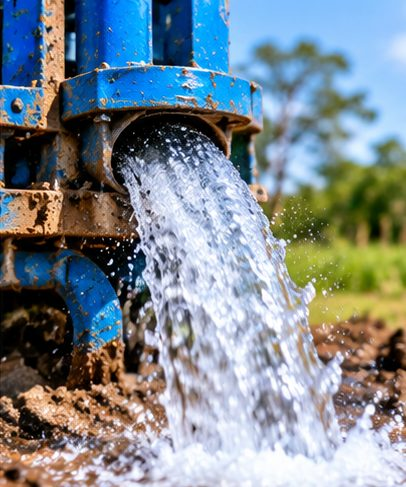
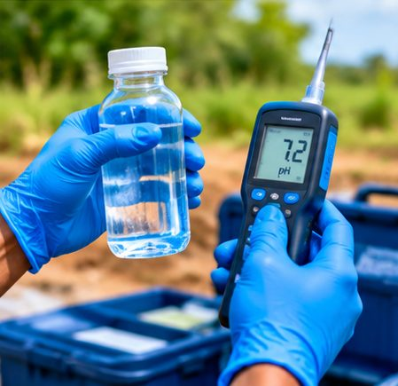

01
01Borehole Drilling
Professional drilling of new boreholes for homes, farms, businesses and industry. [Depth range and rig type to confirm]
 02
02Water Siting
Geohydrological survey so we pinpoint where the water is, instead of guessing.
 03
03Pumps & Tanks
Supply and installation of submersible and surface pumps, tanks and pipework sized to your yield.

04Yield Testing
Testing that confirms how much water your borehole can safely supply.
05
Repair & Cleaning
Flushing, rehabilitation and repairs for boreholes that have slowed down or stopped.

06Water Quality
Guidance on testing and treating borehole water, linked to the expertise of Pure Touch Chemicals.
Who we serve
Homeowners and estatesFarms and agricultureSchools, clinics, communitiesBusinesses, factories, minesMunicipalities and contractors